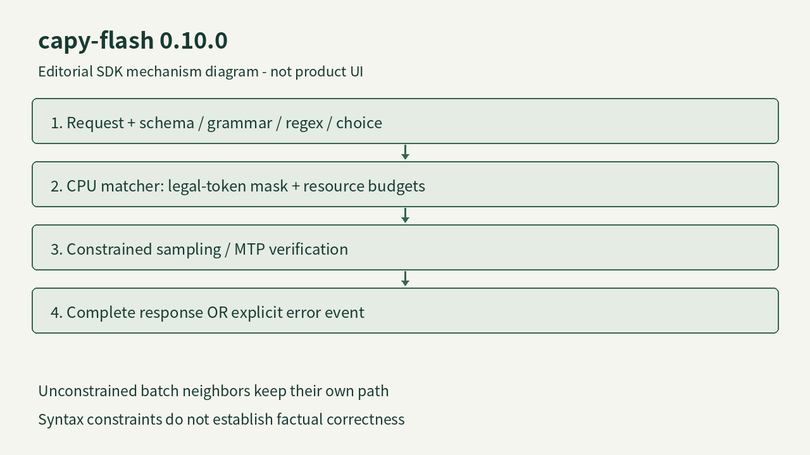

capy-flash 0.10.0 · 开源本地推理引擎／SDK
capy-flash在生成时限制JSON格式，并隔离复杂约束的资源开销
2026-11-09T06:30:24Z · 近三日补充／11月9日版本 · 采集 11-10 09:15Z

依据发行说明绘制的SDK约束采样示意；非产品界面、非实测轨迹 ↗ 原始图证让输出先满足接口合同
把本地模型接到表单、分类或资料提取流程时，下游通常需要字段，而不是一段像 JSON 的文字。capy-flash 0.10.0 让请求直接指定 JSON Schema、GBNF 语法、正则表达式或有限选项。它用 XGrammar 的 CPU 核心，在每轮解码前计算合法 token 掩码，再约束采样；MTP 草稿也会检查是否符合约束。同批没有约束的请求保留原来的路径，而 DFlash2 的受约束请求会关闭草稿解码。对开发者而言，变化发生在输出生成过程中，少了一类事后修补括号和字段的工作，但结构正确仍不能证明提取值真实或分类判断正确。
相似协议不等于所有参数都支持
同一个服务暴露 Chat Completions、Responses 和 Anthropic Messages 形式的接口，但约束要放在各自的字段里：response_format、text.format 或 output_config.format。三个入口都支持流式返回。默认严格对象会关闭未声明的额外键，和字面 JSON Schema 的开放对象行为不同；需要开放字段时必须显式写出。文档也列出尚不支持的关键词，不能把兼容接口理解成完整实现所有供应商行为。当前 required 或指定函数的 tool_choice、strict tools 仍会返回错误；约束不能与活动工具或自定义停止字符串混用。迁移已有客户端时，需要对照实际调用形态，而不是只替换服务器地址。
复杂格式也会消耗共享算力
这一版不只增加格式功能，还限制客户端能提交的约束大小、嵌套层数、成员数、编译时间、并行编译数量、匹配 CPU 时间和内存。格式编译排队满了会返回 429，超过具体预算则给出对应错误，目的是避免一条复杂请求拖慢同批其它请求。默认编译时限五秒，从实际取得编译槽位开始计算；等待槽位与格式本身太复杂是两种不同状态。若流已经返回 200，随后匹配失败仍会以协议错误事件结束，前面收到的内容是不完整结果。客户端必须等到成功终止再使用数据，不能把连接成功或半截 JSON 当作验收通过。
本地硬件与并发配置仍有代价
项目面向指定 Qwen3.8 模型和一张或两张 16 GB 的 sm_120 显卡，Flash-Next 放不进显存的专家会在主机内存与 CPU 上处理，具体模型包的内存需求差异明显。前一版 0.9.0 已加入可选的活动 KV 放 RAM 与并发支持，本次并非重新宣称这些能力首发。0.10.0 将排队默认超时从三十秒改为十分钟，减少长提示同时到来时过早拒绝，但也可能让用户等待更久。作者在双 RTX 5070 Ti 上报告三百六十次受约束生成通过独立格式验证器；这是维护者的特定配置结果，不是本刊复测。接入前应同时看成功结束、字段语义、排队延迟和错误处理，而非只比较每秒 token。
← 回到项目，继续翻页